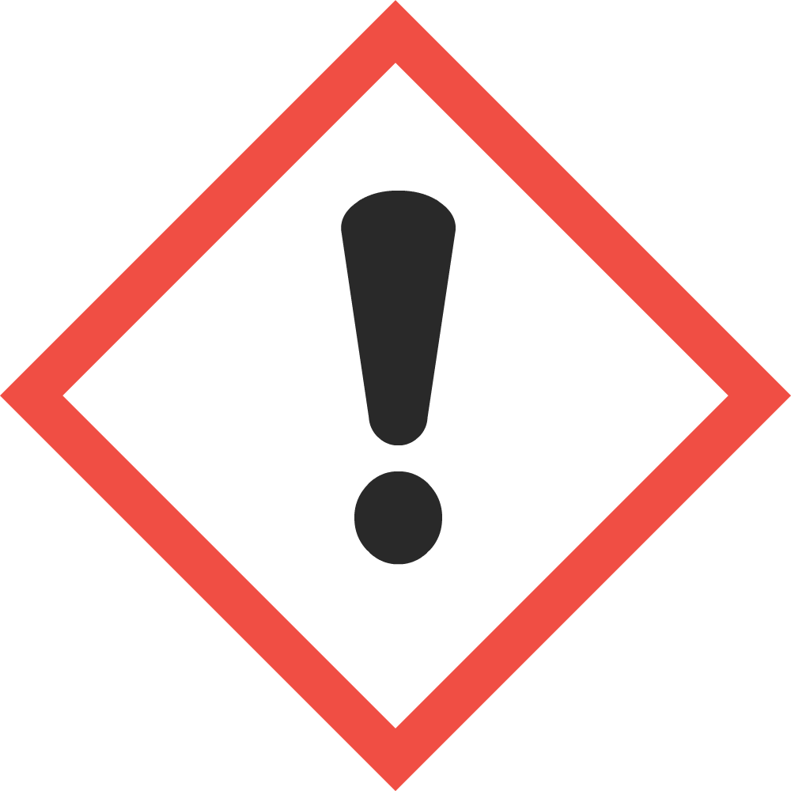
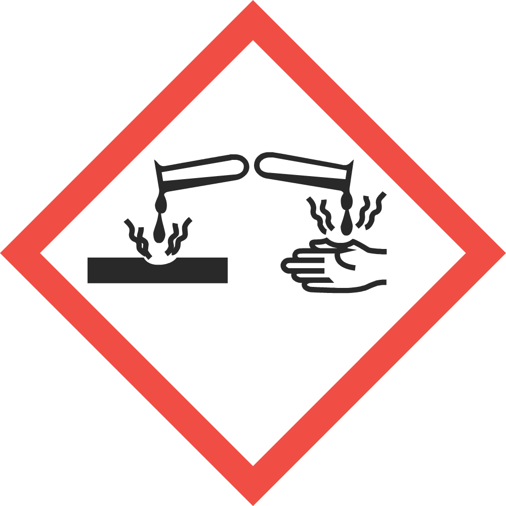
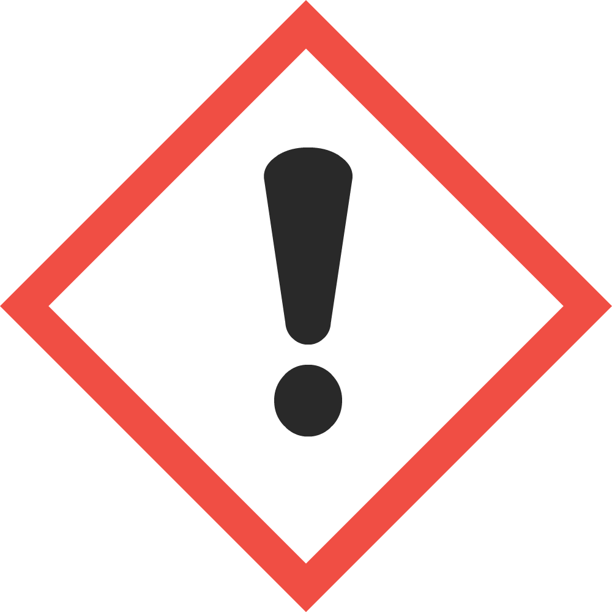
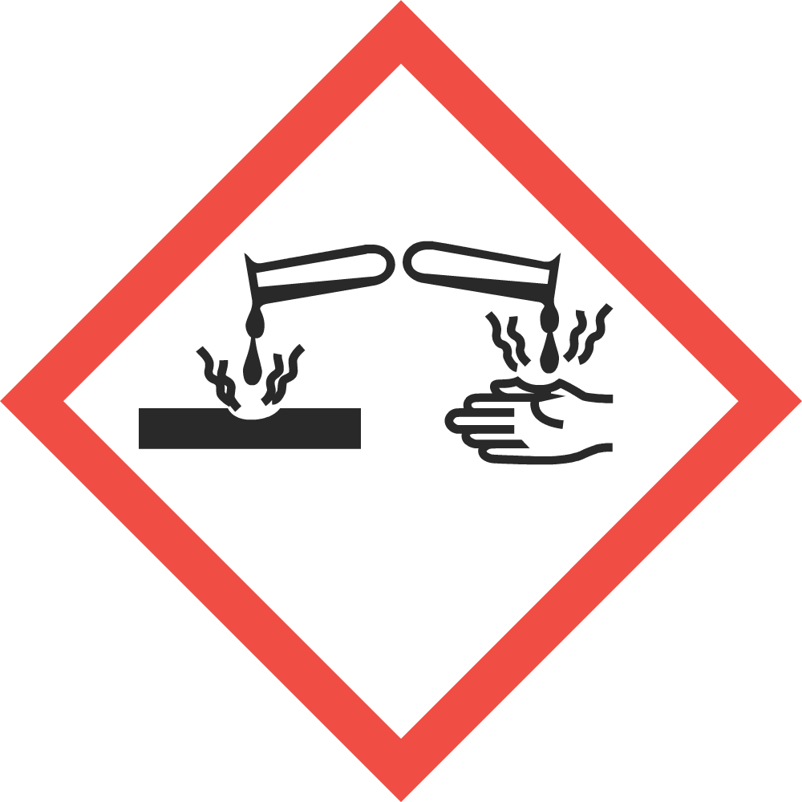

SAFETY DATA SHEET
SECTION 1 - IDENTIFICATION
Product identifier used on the label: Speedy Sanitizer
Other means of Identification: SS512
Recommended use of the chemical and restrictions on use: For professional use only.
Manufacturer/Supplier: Acme Industries
Address: 123 Memory Lane, Ottawa, ON T6A3Y5
Telephone: (613)123-4567 Fax: (613)123-5678
24 Hr. Emergency Tel. #: Info 1-800-123-4567 (North America), 001-1-613-123-4567 (International)
Other means of Identification: SS512
Recommended use of the chemical and restrictions on use: For professional use only.
Manufacturer/Supplier: Acme Industries
Address: 123 Memory Lane, Ottawa, ON T6A3Y5
Telephone: (613)123-4567 Fax: (613)123-5678
24 Hr. Emergency Tel. #: Info 1-800-123-4567 (North America), 001-1-613-123-4567 (International)
SECTION 2 - HAZARDS IDENTIFICATION
Classification of the chemical:
Serious Eye Damage :Category 1
Skin Corrosion/Irritation :Category 2
Label Elements:Skin Corrosion/Irritation :Category 2
Signal Word: Danger
Hazard statement(s):
Precautionary statement(s):
Hazard pictogram(s):
 
Other hazards not otherwise classified: None Known
Unknown Acute Toxicity: 0%
Hazard statement(s):
| - | Causes severe eye damage |
| - | Causes skin irritation |
| P260 | Do not breathe dust/fume/gas/mist/vapours/spray |
| P264 | Wash exposed areas thoroughly after handling |
| P280 | Wear protective gloves/protective clothing/eye protection/face protection |
| P301+330+331 | IF SWALLOWED: Rinse mouth. Do NOT induce vomiting |
| P303+361+353 | IF ON SKIN (or hair): Remove/Take off immediately all contaminated clothing. Rinse skin with water/shower |
| P304+340 | IF INHALED: Remove victim to fresh air and keep at rest in a position comfortable for breathing |
| P305+351+338 | IF IN EYES: Rinse cautiously with water for several minutes. Remove contact lenses if present and easy to do - continue rinsing |
| P310 | Immediately call a poison center or doctor/physician |
| P321 | Specific treatment (see section 4 of SDS) |
| P363 | Wash contaminated clothing before reuse |
| P405 | Store locked up |
| P501 | Dispose of contents/container in accordance with local regulation |
 
Other hazards not otherwise classified: None Known
Unknown Acute Toxicity: 0%
SECTION 3 - COMPOSITION/INFORMATION ON INGREDIENTS
| Chemical Name, Common Name & Synonyms: | CAS # | Concentration % |
|---|---|---|
| Alkyl dimethyl ethylbenzyl ammonium chloride (40%), Alkyl dimethyl benzyl ammonium chloride (40%), Ethanol (9%), Alkyldimethyl amines -C12-18 (<1.6%) | 85409-23-0, 6839101-5, 64-17-5, 68391-04-8 | 7-13 |
SECTION 4 - FIRST-AID MEASURES
Description of first aid measures:
If swallowed: Rinse mouth. Do NOT induce vomiting. Immediately call a poison center or doctor/physician.
If on skin (or hair): Take off immediately all contaminated clothing. Rinse skin with water/shower. If skin irritation occurs get medical advice/attention.
If inhaled: Remove person to fresh air and keep comfortable for breathing. Immediately call a poison center or doctor/physician.
If in eyes: Rinse cautiously with water for several minutes. Remove contact lenses, if present and easy to do. Continue rinsing. Immediately call a doctor/physician.
Most Important symptoms and effects, both acute and delayed: Causes severe skin burns and eye damage.
Indication of any immediate medical attention and special treatment needed: Treat symptomatically
If on skin (or hair): Take off immediately all contaminated clothing. Rinse skin with water/shower. If skin irritation occurs get medical advice/attention.
If inhaled: Remove person to fresh air and keep comfortable for breathing. Immediately call a poison center or doctor/physician.
If in eyes: Rinse cautiously with water for several minutes. Remove contact lenses, if present and easy to do. Continue rinsing. Immediately call a doctor/physician.
Most Important symptoms and effects, both acute and delayed: Causes severe skin burns and eye damage.
Indication of any immediate medical attention and special treatment needed: Treat symptomatically
SECTION 5 - FIRE-FIGHTING MEASURES
Extinguishing media:
Flammability classification: Not flammable
Hazardous combustion products: Carbon oxides, oxides of phosphorus other unidentified organic compounds.
Special protective equipment and precautions for firefighters:
Suitable extinguishing media: Use extinguishing measures that are appropriate to local circumstances and the surrounding environment.
Unsuitable extinguishing media: Not determined
Special hazards arising from the substance or mixture: None known Unsuitable extinguishing media: Not determined
Flammability classification: Not flammable
Hazardous combustion products: Carbon oxides, oxides of phosphorus other unidentified organic compounds.
Special protective equipment and precautions for firefighters:
Protective equipment for fire-fighters: Firefighters should wear proper protective equipment and selfcontained breathing apparatus with full face piece operated in positive pressure mode.
Special fire-fighting procedures: Move containers from fire area if safe to do so. Cool closed containers exposed to fire with water spray. Do not allow run-off from firefighting to enter drains or water courses. Dike for water control.
Special fire-fighting procedures: Move containers from fire area if safe to do so. Cool closed containers exposed to fire with water spray. Do not allow run-off from firefighting to enter drains or water courses. Dike for water control.
SECTION 6 - ACCIDENTAL RELEASE MEASURES
Personal precautions, protective equipment and emergency procedures: All persons dealing with the clean-up should wear the appropriate chemically protective equipment. Keep people away from and upwind of spilt/leak. Restrict access to area until completion of clean-up. Refer to protective measures listed in sections 7 and 8.
Methods and material for containment and cleaning up: Do not allow material to contaminate ground water system. If necessary, dike well ahead of the spill to prevent runoff into drains, sewers, or any natural waterway or drinking supply. Ventilate the area. Prevent further leakage or spillage if safe to do so. Soak up with inert absorbent material. Do not use combustible absorbents, such as sawdust. Pick up and transfer to properly labeled containers. Contaminated absorbent material may pose the same hazards as the spilled product. Contact the proper local authorities.
Methods and material for containment and cleaning up: Do not allow material to contaminate ground water system. If necessary, dike well ahead of the spill to prevent runoff into drains, sewers, or any natural waterway or drinking supply. Ventilate the area. Prevent further leakage or spillage if safe to do so. Soak up with inert absorbent material. Do not use combustible absorbents, such as sawdust. Pick up and transfer to properly labeled containers. Contaminated absorbent material may pose the same hazards as the spilled product. Contact the proper local authorities.
SECTION 7 - HANDLING AND STORAGE
Precautions for safe handling: Handle in accordance with good industrial hygiene and safety practice. Use protective equipment recommended in section 8. Avoid contact with skin, eyes or clothing. Do not breathe dust/fume/gas/mist/vapors/spray. Wash face, hands, and any exposed skin thoroughly after handling.
Conditions for safe storage: Keep container tightly closed and store in a cool, dry and well-ventilated place. Store locked up. Keep out of reach of children.
Incompatible materials: Oxidizing agents. Do not mix with other chemicals or cleaners
Conditions for safe storage: Keep container tightly closed and store in a cool, dry and well-ventilated place. Store locked up. Keep out of reach of children.
Incompatible materials: Oxidizing agents. Do not mix with other chemicals or cleaners
SECTION 8 - EXPOSURE CONTROLS AND PERSONAL PROTECTION
Exposure Limits:
Exposure controls:
| OSHA PEL | |||||
|---|---|---|---|---|---|
| Chemical Name | CAS # | TWA | STEL | PEL | STEL |
| Alkyl dimethyl ethylbenzyl ammonium chloride (40%), Alkyl dimethyl benzyl ammonium chloride (40%), Ethanol (9%), Alkyldimethyl amines -C12-18 (<1.6%) | 85409-23-0,68391-01-5, 64-175, 68391-04-8 | 1000 ppm (Ethanol) | 1000 ppm (Ethanol) | ||
Ventilation and engineering measures: Use only in well-ventilated areas. Apply technical measures to comply with the occupational exposure limits. Where reasonably practicable this should be achieved by the use of local exhaust ventilation and good general extraction. In case of insufficient ventilation wear suitable respiratory equipment.
Respiratory protection: If airborne concentrations are above the permissible exposure limit or are not known, use NIOSH-approved respirators. Respirators should be selected based on the form and concentration of contaminants in air, and in accordance with OSHA (29 CFR 1910.134). Advice should be sought from respiratory protection specialists.
Skin protection: Wear protective gloves. Where extensive exposure to product is possible, use resistant coveralls, apron and boots to prevent contact. The suitability for a specific workplace should be discussed with the producers of the protective regimes.
Eye face protection: Wear eye/face protection. Wear as appropriate tightly fitting safety goggles; Safety glasses with side-shields.
Other protective equipment: Ensure that eyewash stations and safety showers are close to the workstation location. Other equipment may be required depending on workplace standards.
General hygiene considerations: Do not breathe vapours or spray mist. Avoid contact with skin, eyes and clothing. Do not eat, drink or smoke when using this product. Wash exposed areas thoroughly after handling. Remove and wash contaminated clothing before re-use. Handle in accordance with good industrial hygiene and safety practice.
Respiratory protection: If airborne concentrations are above the permissible exposure limit or are not known, use NIOSH-approved respirators. Respirators should be selected based on the form and concentration of contaminants in air, and in accordance with OSHA (29 CFR 1910.134). Advice should be sought from respiratory protection specialists.
Skin protection: Wear protective gloves. Where extensive exposure to product is possible, use resistant coveralls, apron and boots to prevent contact. The suitability for a specific workplace should be discussed with the producers of the protective regimes.
Eye face protection: Wear eye/face protection. Wear as appropriate tightly fitting safety goggles; Safety glasses with side-shields.
Other protective equipment: Ensure that eyewash stations and safety showers are close to the workstation location. Other equipment may be required depending on workplace standards.
General hygiene considerations: Do not breathe vapours or spray mist. Avoid contact with skin, eyes and clothing. Do not eat, drink or smoke when using this product. Wash exposed areas thoroughly after handling. Remove and wash contaminated clothing before re-use. Handle in accordance with good industrial hygiene and safety practice.
SECTION 9 - PHYSICAL AND CHEMICAL PROPERTIES
|
Appearance: Clear, colorless liquid Odor: Bland Odor threshold: No applicable information available pH: 7-8 Melting/Freezing point: No applicable information available Initial boiling point and boiling range: 100 C Flash point: None to boiling Flashpoint (Method): No applicable information available Evaporation rate (BuAe = 1): Similar to water Flammability (solid, gas): Not flammable Lower flammable limit (% by vol.): Not Flammable Upper flammable limit (% by vol.): Not Flammable |
Vapor pressure: No applicable information available Vapor density: No applicable information available Relative density: 1.0 Solubility in water: Soluble Other solubility(ies): No information available Partition coefficient: No information available Auto ignition temperature: No information available Decomposition temperature: No information available Viscosity: Water thin Volatile organic Compounds (%VOC's): 11 g/L Other physical/chemical comments: No information |
SECTION 10 - STABILITY AND REACTIVITY
Reactivity: Not normally reactive
Chemical stability: Stable
Possibility of hazardous reactions: No hazardous polymerization
Conditions to avoid: Keep out of reach of children. Do not use in areas without adequate ventilation. Avoid contact with incompatible materials.
Incompatible materials: Oxidizing agents.
Hazardous decomposition products: None known. Refer to 'Hazardous Combustion Products' in Section 5
Chemical stability: Stable
Possibility of hazardous reactions: No hazardous polymerization
Conditions to avoid: Keep out of reach of children. Do not use in areas without adequate ventilation. Avoid contact with incompatible materials.
Incompatible materials: Oxidizing agents.
Hazardous decomposition products: None known. Refer to 'Hazardous Combustion Products' in Section 5
SECTION 11 - TOXICOLOGICAL INFORMATION
Information on likely routes of exposure:
See the following table for individual ingredient acute toxicity data.
*All empty cells no applicable information available
Other important toxicological hazards: None reported
Routes of entry - inhalation: Avoid breathing vapors or mists
Routes of entry - skin & eye: Avoid contact with skin or eyes
Routes of entry - Ingestion: Do not taste or swallow
Potential Health Effects:Routes of entry - skin & eye: Avoid contact with skin or eyes
Routes of entry - Ingestion: Do not taste or swallow
Signs and symptoms of short term (acute) exposure:
Potential Chronic Health Effects:
Symptoms: Please see section 4 of this SDS sheet for symptoms
Mutagenicity: Not expected to be mutagenic in humans
Carcinogenicity: This product contains ethanol which is known to be a carcinogen when consumed orally; there is no evidence to suggest ethanol is carcinogenic as used in this product.
Reproductive effects: No applicable information available
Sensitization to material: No applicable information available
Specific target organ effects: No data available to indicate product or components will have specific target organ effects
Medical conditions aggravated by overexposure: Pre-existing skin, eye or respiratory conditions
Toxicological data:Carcinogenicity: This product contains ethanol which is known to be a carcinogen when consumed orally; there is no evidence to suggest ethanol is carcinogenic as used in this product.
Reproductive effects: No applicable information available
Sensitization to material: No applicable information available
Specific target organ effects: No data available to indicate product or components will have specific target organ effects
Medical conditions aggravated by overexposure: Pre-existing skin, eye or respiratory conditions
See the following table for individual ingredient acute toxicity data.
| Chemical name | CAS # | LD50 (Oral, rat) | LD50 (Dermal. Rabbit) | LC50 (4hr, Inhal., rat) |
|---|---|---|---|---|
| Alkyl dimethyl ethylbenzyl ammonium chloride (40%), Alkyl dimethyl benzyl ammonium chloride (40%), Ethanol (9%), Alkyldimethyl amines -C12-18 (<1.6%) | 85409-23-0, 68391-01-5, 64-17-5, 68391-048 | 501 |
Other important toxicological hazards: None reported
SECTION 12 - ECOLOGICAL INFORMATION
Ecotoxicity: No applicable information available
Persistence and degradability: No applicable information available
Bioaccumulation potential: No applicable information available
Mobility in soil: No applicable information available
Other Adverse Environmental effects: No applicable information available
Persistence and degradability: No applicable information available
Bioaccumulation potential: No applicable information available
Mobility in soil: No applicable information available
Other Adverse Environmental effects: No applicable information available
SECTION 13 - DISPOSAL CONSIDERATIONS
Handling for disposal: Handle in accordance with good industrial hygiene and safety practice. Refer to protective measures listed in sections 7 and 8. Empty containers retain residue (liquid and/or vapour) and can be dangerous.
Methods of disposal: Dispose in accordance with all applicable federal, state, provincial and local regulations. Contact your local, state, provincial or federal environmental agency for specific rules.
RCRA: If this product, as supplied, becomes a waste in the United States, it may meet the criteria of a hazardous waste UN defined under RCRA, Title 40 CFR 261. It is the responsibility of the waste generator to determine the proper waste identification and disposal method. For disposal of unused or waste material, check with local, state and federal environmental agencies.
Methods of disposal: Dispose in accordance with all applicable federal, state, provincial and local regulations. Contact your local, state, provincial or federal environmental agency for specific rules.
RCRA: If this product, as supplied, becomes a waste in the United States, it may meet the criteria of a hazardous waste UN defined under RCRA, Title 40 CFR 261. It is the responsibility of the waste generator to determine the proper waste identification and disposal method. For disposal of unused or waste material, check with local, state and federal environmental agencies.
SECTION 14 - TRANSPORTATION INFORMATION
Special Shipping Information: Keep from freezing
T.D.G. Classification: Not regulated under T.D.G.
D.O.T. Classification: Not regulated under D.O.T.
T.D.G. Classification: Not regulated under T.D.G.
D.O.T. Classification: Not regulated under D.O.T.
SECTION 15 - REGULATORY INFORMATION
EPA/Health Canada Statement:
This chemical is registered by the Environmental Protection Agency/Health Canada and is subject to certain labeling requirements by law. These requirements differ from the classification criteria and hazard information required for safety data sheets and for workplace labels of non-pesticide chemicals. For more information see product label.
This chemical is registered by the Environmental Protection Agency/Health Canada and is subject to certain labeling requirements by law. These requirements differ from the classification criteria and hazard information required for safety data sheets and for workplace labels of non-pesticide chemicals. For more information see product label.
SECTION 16 - OTHER INFORMATION
Revision Date: December 1st, 2018
Legend:
CAS: Chemical AbstractServices
CFR: Code of Federal Regulations
CSA: CanadianStandardsAssociation
DOT: Department of Transportation
EPA: Environmental Protection Agency
LC: Lethal Concentration
LD: Lethal Dose
OSHA: Occupational Safety and Health Administration
PEL: Permissible exposure limit
RCRA: Resource Conservation and Recovery Act
SDS: Safety Data Sheet Material Safety Data Sheet
STEL: Short Term Exposure Limit
TDG: Canadian Transportation of Dangerous Goods Act & Regulations
TLV: Threshold Limit Values
TWA: Time Weighted Average
CFR: Code of Federal Regulations
CSA: CanadianStandardsAssociation
DOT: Department of Transportation
EPA: Environmental Protection Agency
LC: Lethal Concentration
LD: Lethal Dose
OSHA: Occupational Safety and Health Administration
PEL: Permissible exposure limit
RCRA: Resource Conservation and Recovery Act
SDS: Safety Data Sheet Material Safety Data Sheet
STEL: Short Term Exposure Limit
TDG: Canadian Transportation of Dangerous Goods Act & Regulations
TLV: Threshold Limit Values
TWA: Time Weighted Average
Prepared By: Acme Industries
Tel: (613)-123-4567